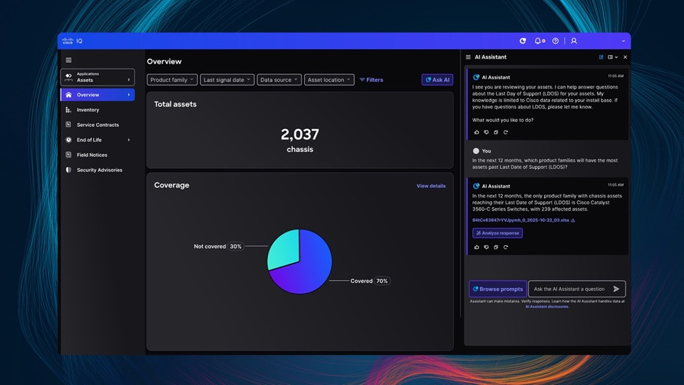

Industry-Level Inspiration
Standard internațional de prezentare și performanță

Mindset de performanță
Competențe validate, aplicabilitate reală și progres măsurabil.

Continuous learning culture
Pregătire pentru roluri IT moderne prin practică și adaptabilitate.